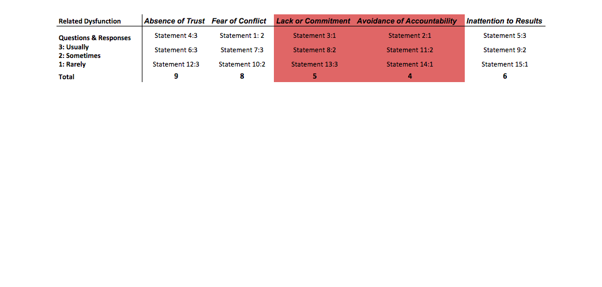
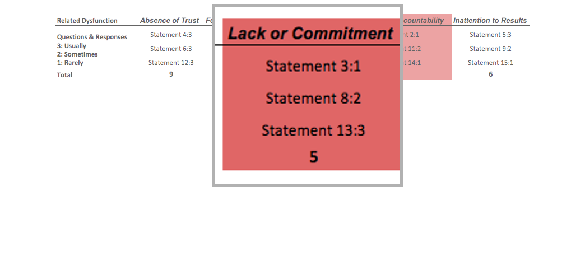

ADDRESSING TEAM DYSFUNCTIONS
By OpenFOSS
Team Members
 Gideon Nyamachere |
Jonathan Grant |
 Said Robley |
 Tell Hause |
DO WE HAVE DYSFUNCTIONS?
- Going through The 5 Dysfunctions of a Team book by Lencioni
- Inattention to results: Team not buying into decisions
- How did we identify dysfunctions?
- Presentation Preparation Problems
- Identified Imbalanced Output
- A Fear of Failure
- Placing Individual Goals Ahead of Team Goals
Gideon Nyamachere
HOW DID OUR TEAM ADDRESS THESE DYSFUNCTIONS?
- Team Building:
- Focus on meaningful conversation
- Don't talk about work
- Diagnostic Questionare:
- All 5 dysfunctions are interrelated
- Lack of Commitment
- Avoidance of Accountability
- Inattention to Results
Tell Hause
Questionare Result Example

Tell Hause
Questionare Result Example

Tell Hause
OPPORTUNITIES FOR IMPROVEMENT
- Pair Programming
- Getting members comfortable with the process
- Coordinating Schedules
- Identifying a common work unit
- Giving Critique; Taking criticism gracefully
- Take responsibility for your deadlines.
- Kill ambiguity within your deadlines.
Jonathan Grant
WHAT WORKED WELL
- No Agenda? No Meeting.
- Focus on sticking to the agenda
- Keys to Our Success
- Open communications.
- Honest feedbacks
- Willing to admit mistakes and weaknesses
- Created a trusting team: honesty
- Automated the Questionnaire with Google Docs
Said Robley
Said Robley
"Every team needs constant work, because without it, even the best ones deviate toward dysfunction"
~Lencioni
- Be cognizant of creeping dysfunctions.
- Make addressing dysfunction simple & automated.
- Seek knowledge from other's who have been there before.
- Know your weaknesses; address them regularly. <<<<<<< HEAD
- https://tinyurl.com/OpenFOSSDysfunction ||||||| merged common ancestors =======
- tinyurl.com/OpenFOSSDysfunction >>>>>>> 59145cb0a13c9f1cdcd9e88474a16bda40729200